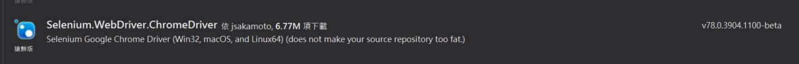

Selenium.WebDriver

Selenium.WebDriver.ChromeDriver

開啟關閉
[TestClass]
public class UnitTest1
{
IWebDriver driver;
[TestMethod]
public void TestMethod1()
{
driver = new ChromeDriver();
driver.Url = "http://www.google.co.in";
Thread.Sleep(3000);
driver.Close();
}
}
取得元素
驗證元素是否存在 | driver.findElements( By.id("...") ).size() != 0 |
WebElement element = driver.findElement(By.id("my-id"));Actions actions = new Actions(driver); actions.moveToElement(element);// actions.click(); actions.perform(); | |